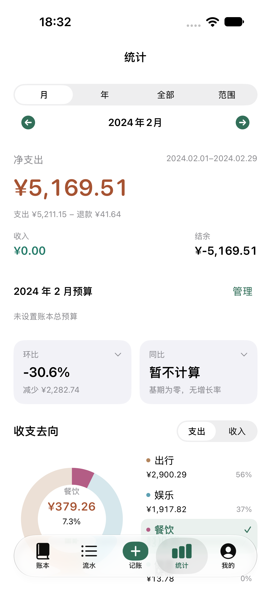
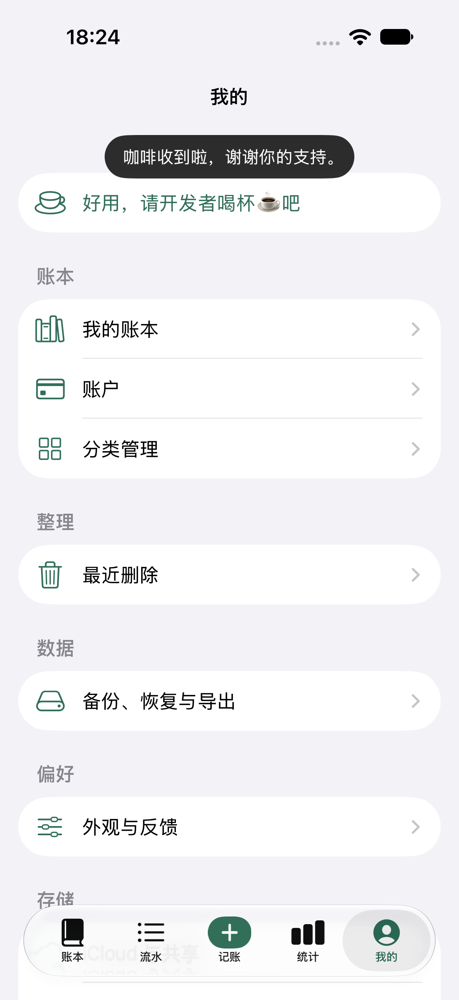
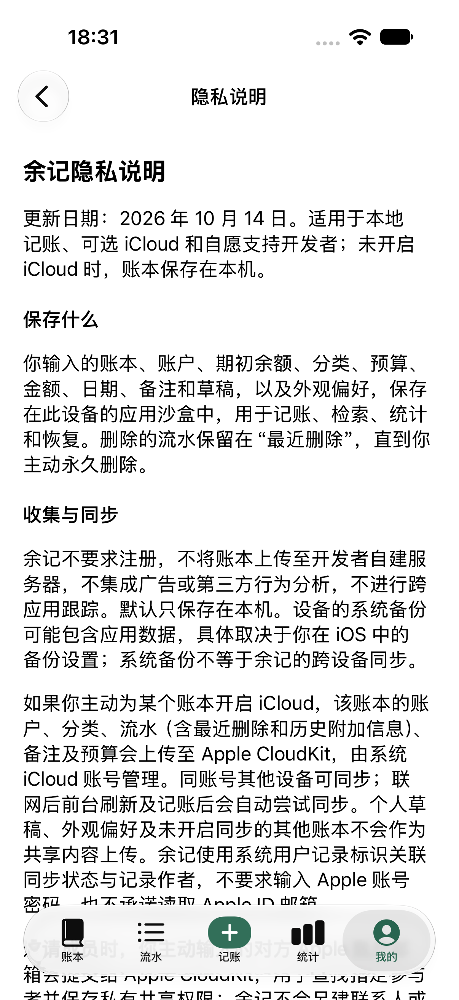
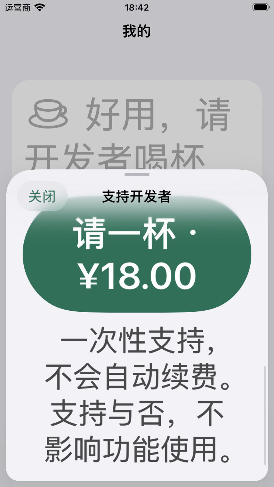
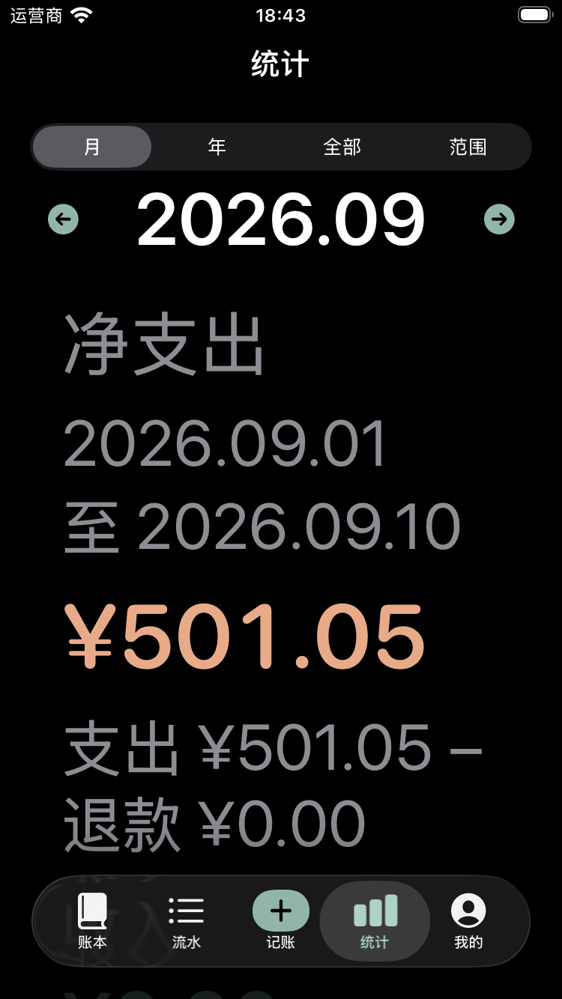

送审前原生回归 · 2026-10-14
以下为合成数据、本地 StoreKit 或模拟云回归截图；不作为真实支付、Production 或商店素材的证明。

统计同页选择iPhone 18 Pro / iOS 27
支付关闭与感谢iPhone 18 Pro / iOS 27
新版离线隐私说明iPhone 18 Pro / iOS 27
小屏最大字号支持页iPhone SE 3 / iOS 26.5
小屏深色最大字号统计iPhone SE 3 / iOS 26.5